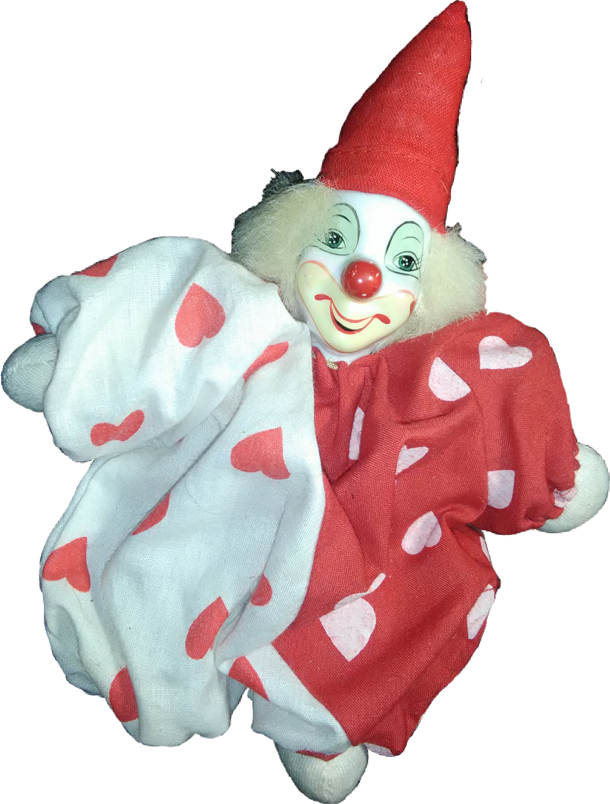

Hello there! This is my website dedicated to the subject of clowns. I've had an interest in clowns for awhile, despite their bad rep. What I love the most about clowns is the artistry in their costumes and makeup, as well as their passion to entertain. On here, you can learn about the evolution of clowns, the many different types of clowns and take a look at my own clown collection! Enjoy!
